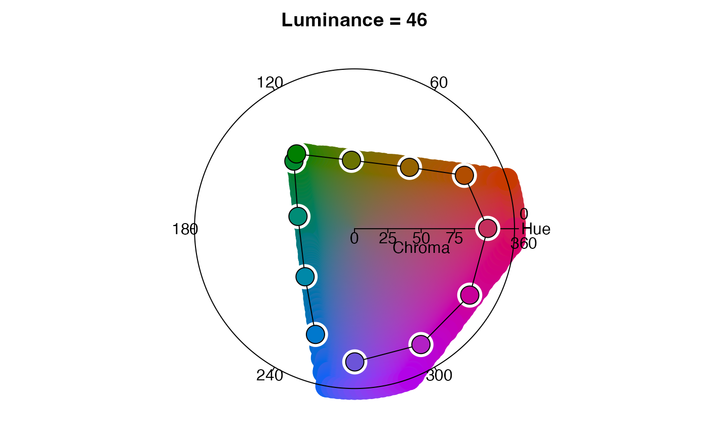

R/palette.R
palette_timecycle.RdThis function generates an HCL palette for visualizing a cyclical sequence of distributions (e.g., a series of distributions describing species occurrence in each of 52 weeks of the annual cycle or a series of utilization distributions describing typical space use by an individual animal in each hour of a 24-hour daily cycle).
palette_timecycle(x, start_hue = 240, clockwise = TRUE)
| x | RasterStack or integer describing the number of layers for which colors need to be generated. |
|---|---|
| start_hue | integer between -360 and 360 representing the starting hue in an HCL color wheel. For further details, consult the documentation for colorspace::rainbow_hcl. The default value of 240 will start the palette at "blue". |
| clockwise | logical indicating which direction to move around color
wheel. The default |
A data frame with three columns:
layer_id: integer identifying the layer containing the maximum
intensity value; mapped to hue.
specificity: the degree to which intensity values are unevenly
distributed across layers; mapped to chroma.
color: the hexadecimal color associated with the given layer and
specificity values.
palette_timeline for linear sequences of distributions and palette_set for unordered sets of distributions.
Other palette:
palette_set(),
palette_timeline()
# load field sparrow data data(fiespa_occ) # generate hcl color palette pal <- palette_timecycle(fiespa_occ) head(pal)#> specificity layer_id color #> 1 0 1 #6A6A6A #> 2 0 2 #6A6A6A #> 3 0 3 #6A6A6A #> 4 0 4 #6A6A6A #> 5 0 5 #6A6A6A #> 6 0 6 #6A6A6A# visualize the palette in HCL space with colorspace::hclplot library(colorspace) hclplot(pal[pal$specificity == 100, ]$color)